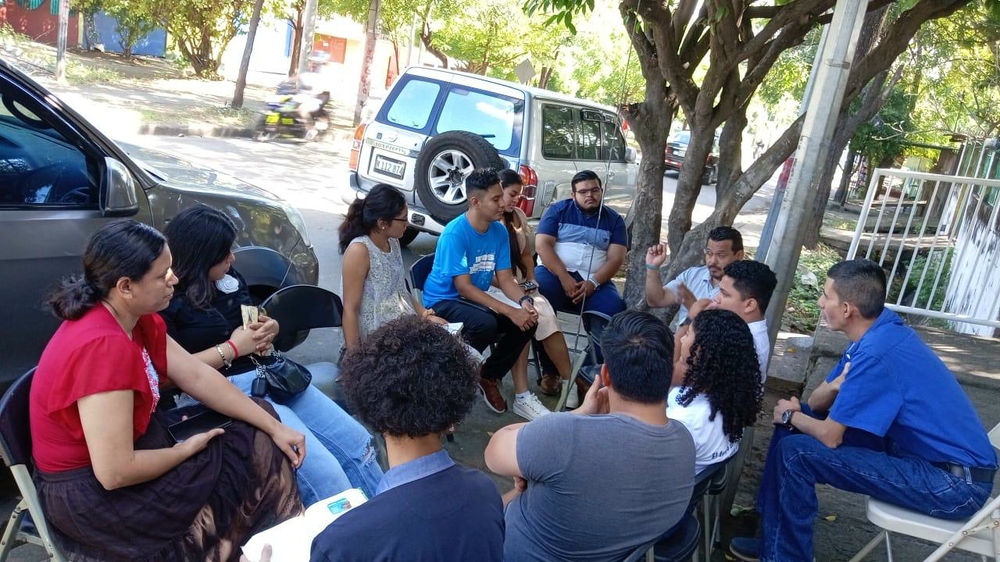
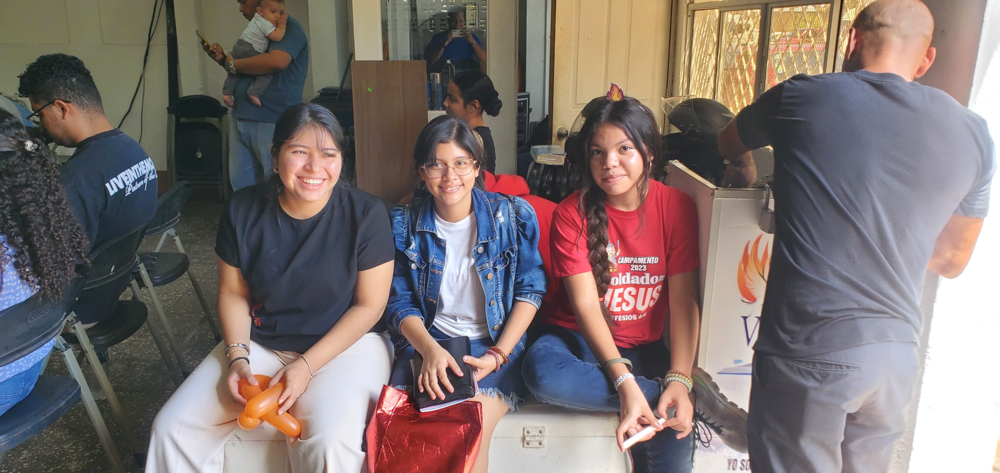

Un Lugar Para Crecer en Fe y Amor
Iglesia del Dios Viviente · Managua, Nicaragua
Conoce Nuestra Iglesia
Descubre más
Iglesia del Dios Viviente · Managua, Nicaragua
Conoce Nuestra Iglesia
Somos la Iglesia del Dios Viviente, una comunidad de fe que forma parte de la cadena de iglesias menonitas en Nicaragua. Nuestro compromiso es vivir y compartir el Evangelio de Jesucristo, cumpliendo el llamado de
Mateo 28:19-20 “Id y haced discípulos a todas las naciones…”Conocer Más

Creciendo juntos en el amor de Cristo
Fundamentados en la Palabra de Dios, estos son los pilares de nuestra fe.
Creemos en Jesucristo como único Salvador y Señor.
La Palabra de Dios es nuestra guía de fe y conducta.
Servir a los demás con el amor que Cristo nos enseñó.
Somos un solo cuerpo en Cristo, edificándonos en amor.
Conoce las actividades de la iglesia y la programación semanal de los hermanos.
| Fecha | Hora | Actividad | Estado |
|---|
Estas son las labores y roles asignados a los hermanos durante esta semana.

Diferentes áreas de servicio para crecer espiritualmente y servir a Dios.


Te esperamos con los brazos abiertos. Únete a nosotros.
Culto Dedicado a la Adoracion a Dios. Clamando por peticiones de nuestros Hermanos.
Martes 6:00 PM - 8:00 PMCulto Dirigido por Mujeres. Con el respaldo de nuestro Señor.
Viernes 6:00 PM - 8:00 PMAyuno congregacional para Crecimiento Espiritual.
Miércoles 9:00 AM - 2:00 PMPara Jóvenes, Adolescentes. Servicio dedicado a nuestro Padre.
Sábados 6:00 PM - 8:00 PMLos Estudios de SEAN son una serie de libros que enseñan sobre la Vida en Cristo.
Jueves 6:00 PM - 8:00 PMCulto Poderoso. Donde se adora, alaba y se aprende de nuestro Señor Dios.
Domingo 4:00 PM - 7:00 PMLos servicios Dominical son para todas las edades, desde niños pequeños hasta adultos. Con diferentes maestros, dinámicas y aprendizaje del Señor.
Domingos de 9:00 am a 11:00 am
 Maestros de Escuela Dominical
Maestros de Escuela Dominical
 Líder de Escuela Dominical
Líder de Escuela Dominical






Los grupos de Celulas, son pequeños cultos dirigidos al Señor con la colaboración de hermanos y hermanas que abren las puertas de sus hogares a nuestros líderes y a Dios.
 Grupo de Celulas
Grupo de Celulas
 Líder de las Celulas
Líder de las Celulas


Guiados por el Espíritu Santo, pastoreando con amor y dedicación.

PASTOR

PASTORA

CO. PASTOR

CO. PASTORA
Managua, Nicaragua, Villa Venezuela, Grupo E Occidental, A media cuadra arriba del Comedor BEMI.